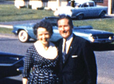

|
MUST READ AFTER MY DEATH
Morgan Dews | USA / SP 2007 | 73 Min.
Material: Super-8
Format: Beta SP
Originalsprache: Englisch
Drehbuch: Morgan Dews
Schnitt: Morgan Dews
Musik: Paul Damian Hogan
Produktion: Morgan Dews
http://www.mustreadaftermydeath.com
Großer Preis FID Marseille 2008
Amerika privat. Allis und Charley, ein Ehepaar aus der Upper Class sucht in den 60er Jahren Hilfe bei einem Psychiater, um ihre Ehe zu retten. Nach zahlreichen Einzel- und Gruppensitzungen gerät die Therapie außer Kontrolle, und es beginnt eine endlose Spirale psychischen Drucks auf die Mutter von fünf Kindern. Sie wird fortan für alles, was in der Familie passiert, verantwortlich gemacht und droht an dem Klischee der "glücklichen" Familie zu zerbrechen. Doch dann sinnt Allis auf posthume Rache. Sie hinterlässt ihrem Enkel Morgan Dews zahlreiche Tonaufnahmen und Super-8-Familymovies, der aus dem umfangreichen Material die erschütternde Familiengeschichte rekonstruiert hat.
Morgan Dews, geb. 1968 in New Haven, Conneticut. Studium der Geschichte an der Rutgers Universität, New Jersey, Abschluss 1990. Danach Umzug nach Barcelona, wo er 14 Jahre lang lebte und sich in der Kunstszene etablierte. Er arbeitete jahrelang als Produzent für Werbefilme in Spanien. Sein Kurzfilm, "Elke's Visit", wurde 2005 in das offizielle Programm des Sundance Film Festival aufgenommen. "Must Read After My Death" ist sein erster abendfüllender Film. Heute lebt und arbeitet er in New York.
Films: Must Read After My Death 2008 | Elke's Visit 2005
zurück
|